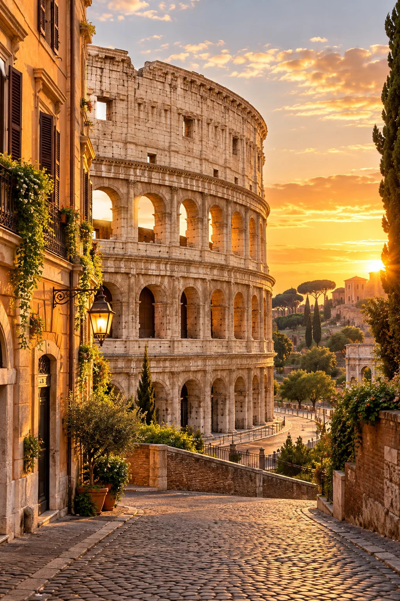

01 / ANCIENT ROME
Колизей и Римский форум
Главная сцена античного города. Бронируйте вход заранее и выделите на комплекс не меньше половины дня.
 Further.
Further.

ИТАЛИЯ · ГОРОД ВЕЧНОЙ ИСТОРИИ
Город, где античные руины соседствуют с шумными площадями, а лучший план иногда — просто идти за ароматом свежей пасты.
Открыть маршрут ↓Начните с античного центра, а затем сверните в кварталы, где Рим живёт сегодня.
Главная сцена античного города. Бронируйте вход заранее и выделите на комплекс не меньше половины дня.
Зайдите внутрь ради огромного купола и света, который меняется в течение дня.
Купол с отверстием · почти 2 000 лет историиПриходите рано утром или поздно вечером, когда площадь становится спокойнее.
Брось монету · загадай желаниеУзкие мощёные улицы, небольшие площади и траттории для неспешного вечера.
После заката · траттории и живая атмосфераМаршрут соединяет главные места центра. На весь день с остановками на еду и кофе.
Точки маршрута на карте · OpenStreetMap
В вашем плане:
Билеты: Колизей и популярные музеи лучше бронировать на официальных сайтах заранее.
Обувь: Брусчатка красивая, но неровная — удобные кроссовки пригодятся.
Вода: В городе есть питьевые фонтанчики nasoni, можно пополнять бутылку.
Темп: Не планируйте слишком много на один день — расстояния на карте обманчивы.
Выберите даты и проверьте варианты перелёта.